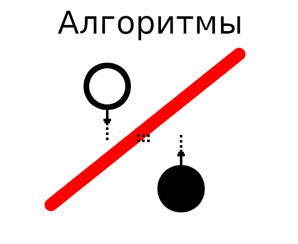

Статья посвящена распараллеливанию пузырьковой сортировки. В статье содержутся: описание алгоритма; примеры на C#, JavaScript; примеры сравнения с алгоритмами, описанными в статье Алгоритмы сортировки #1, на языке C#; премимущества и недостатки алгоритма. Если у вас доступно больше чем одно ядро процессора, то данная сортировка МЕДЛЕННЕЕ сортировок описанных в статье
Алгоритмы сортировки #1. Почему? Рассмотрим далее...

ОПАСНОСТЬ: Быстрая пузырьковая сортировка не быстрая, она МЕДЛЕННАЯ на практике. Дело в том, что она даже математически она не быстрая, если каждое ядро не зависимо, и не нужно создавать контекст потока для ядер. Если изобрели быструю сортировку быстрее, чем в статье Алгоритмы сортировки #1 проверьте её скорость на практике.
Алгоритмы-Заблуждения - Алгоритмы сортировки #2, Быстрая пузырьковая сортировка или Всегда тестируйте.
Анимация 1. Пример быстрой пузырьковой сортировки от меньшего к большему.
Давайте разделим входной массив на части и поручим потоку обрабатывать независимо каждую часть массива. Для бесконечного числа ядер, элемента выделяется два для одного потока, как показано на Анимации 1; один элемент в массиве остаётся лишним - для взаимодействия потоков (один элемент массива делается лишним для всех потоков, а не для каждого). В реальности потоков столько сколько ядер процессора.
Дадим описание этих двух алгоритмов:
Описание алгоритма для бесконечного числа ядер, с двумя элементами на поток (далее будем называть Sort):
Входные данные:
Булево sortOrder — порядок сортировки массива, true — от меньшего к большему, false — от большего к меньшему.
Массив целых чисел array — массив для сортировки.
Алгоритм:
1. Перебираем все элементы массива, от i = 0 пока i < Количество_элементов_в_массиве, элементы нумеруются в массиве с нуля.
1.1. Присваиваем j = 0, если i = чётное; j = 1, если i = не чётное.
1.2. Перебираем в цикле от k = j; k < Количество_элементов_в_массиве - 1; после цикла k = k + 2:
1.2.1. Запускаем в отдельном потоке метод Ak(k).
1.3. Ожидаем окончания потоков Ak.
2. Возвращаем отсортированный массив обратно.
Алгоритм Ak(k):
1. Если sortOrder равен истине, то:
1.1. Если array[k] > array[k+1], то меняем местами эти два элемента.
2. Если sortOrder равен лжы, то:
2.1. Если array[k] < array[k+1], то меняем местами эти два элемента.
3. Оповещаем об окончании потока.
Описание алгоритма для числа ядер для конкретного процессора, с количеством потоков равным суммарному числу ядер процессоров (далее будем называть KernelSort):
Входные данные:
Булево sortOrder — порядок сортировки массива, true — от меньшего к большему, false — от большего к меньшему.
Массив целых чисел array — массив для сортировки.
Алгоритм:
Дополнительный входной параметр:
Целое положительное число, большее нуля kernelCount — количество блоков (ядер процессора) для выполнения сортировки.
1. Перебираем все элементы массива, от i = 0 пока i < ОКР_В_БОЛ((Количество_элементов_в_массиве * (1 + kernelCount / Количество_элементов_в_массиве))); , элементы нумеруются в массиве с нуля.
1.1. Присваевываем j = 0, если i = чётное; j = 1, если i = не чётное.
1.2. Перебыраем в цикле от k = j; k < Количество_элементов_в_массиве - 1; после цикла k = k + ОКР(Количество_элементов_в_массиве / kernelCount):
1.2.1. Запускаем в отдельном потоке метод Ak2(k).
1.3. Ожидаем окончания потоков Ak2.
2. Возвращаем отсортированный массив обратно.
Алгоритм Ak2(k):
1. Если sortOrder равен истине, то:
1.1. Цикл от i = k; до (i < (Количество_элементов_в_массиве - 1)) и ( (i - k) <= ОКР(Количество_элементов_в_массиве / kernelCount)); после цикла i = i + 2.
1.1.1. Если array[i] > array[i+1], то меняем местами эти два элемента.
2. Если sortOrder равен лжы, то:
2.1. Цикл от i = k; до (i < (Количество_элементов_в_массиве - 1)) и ( (i - k) <= ОКР(Количество_элементов_в_массиве / kernelCount)); после цикла i = i + 2.
2.1.1. Если array[i] < array[i+1], то меняем местами эти два элемента.
3. Оповещаем об окончании потока.
ОКР_В_БОЛ(Дробное) — если число Дробное содержит дробь, то возвражаем (Целое_количество_дробей + 1). Т.е. ОКР_В_БОЛ(1.0001) = 2.
ОКР(Дробное) — функция округления числа. Т.е. ОКР(0.1) = 0; ОКР(2.5) = 3.
2. Примеры.
Рассмотрим пример на C#, как реализацию вышепоставленного алгоритма. Так же рассмотрим пример алгоритма Sort (вышеописанного) на JavaScript, с учётом того, что в JavaScript нет многопоточности (сейчас), а только очередь обработки функций.
2.1. Примеры на C#.
Приведу пример реализации алгоритма "Быстрой" пузырьковой сортировки на языке программирования C#.
Основной класс для сортировки двумя вышеописанными алгоритмами (FastBubleSorter.cs):
using System;
using System.Collections.Generic;
using System.Threading;
namespace Sorting
{
/// <summary>
/// Класс для многопоточной пузырьковой сортировки.
/// </summary>
public class FastBubleSorter
{
private class ArrayForSorting
{
public List<int> Array;
public bool SortOrder;
public object LockObject = new object();
public int PreparedElementsM;
public List<int> KernelSort(int kernelCount)
{
int maxSortingIterations = (int) Math.Floor((double)(arr.Array.Count * (1 + kernelCount / arr.Array.Count)));
for (var i = 0; i < maxSortingIterations; i++)
{
lock (arr.LockObject)
{
arr.PreparedElementsM = 0;
}
var j = 0;
if (i % 2 != 0)
{
j = 1;
}
int blockSize = (int) Math.Round((double)(arr.Array.Count / kernelCount));
for (int k = j; k < arr.Array.Count - 1; k = k + blockSize)
{
int ind = k;
Thread t = new Thread(() => { arr.BlockSort(ind, kernelCount); });
t.Start();
}
NewInverseArray(int lenght, bool order) — Метод для создания противоположного сортировке массива. lenght — размер массива. order — порядок отсортированности, true — по возрастанию, false — по убыванию.
TestArray(List arr, bool order) — Метод для тестирования массива на сортированность. arr — массив для тестирования. order — порядок отсортированности, true — по возрастанию, false — по убыванию.
OneThreadSort(bool sortOrder, List arr) — Метод для выполнения над массивом обычной пузырьковой сортировки. sortOrder — порядок сортировки, true — по возрастанию, false — по убыванию. arr — массив для сортировки.
Метод выполнения теста:
static void Main(string[] args)
{
int arrNum = 1000;
int arrLenght = 1000000;
Console.WriteLine(String.Format("Начало тестирования производительности.\r\nТестирование производительности производится на {0} массивах длинной {1} элементов.", arrNum, arrLenght));
for(int i = 0; i < arrNum; i++)
{
Console.WriteLine(String.Format("Тест № {0}", i));
// Генерация массива для тестированития
var arr = FBSTester.NewInverseArray(100, true);
// Время начала теста
DateTime start = DateTime.Now;
// Сортировка
arr = FBSTester.OneThreadSort(false, arr);
// Время окончания теста
DateTime end = DateTime.Now;
// Добавляем время в общее время сортировки.
dtbs += end - start;
}
Console.WriteLine("Начало тестирования обычной многопоточной пузырьковой сортировки.");
DateTime dtfbs = new DateTime(0);
for (int i = 0; i < arrNum; i++)
{
Console.WriteLine(String.Format("Тест № {0}", i));
// Генерация массива для тестированития
var arr = FBSTester.NewInverseArray(100, true);
// Время начала теста
DateTime start = DateTime.Now;
// Сортировка
FastBubleSorter fbs = new FastBubleSorter(false, arr);
arr = fbs.KernelSort(4);
// Время окончания теста
DateTime end = DateTime.Now;
// Добавляем время в общее время сортировки.
dtfbs += end - start;
}
Console.WriteLine(String.Format("\r\nИтоги тестирования сортировок:\r\nВремя выполнения пузырьковой сортировки: {0}\r\nВремя выполнения быстрой пузырьковой сортировки: {1}.\r\nВремя пузырьковой сортировки делённое на время быстрой пузырьковой сортировки: {2}.\r\nБыстрая пузырьковая сортировка медленнее в {3} раз(а).", dtbs.Ticks, dtfbs.Ticks, dtbs.Ticks / dtfbs.Ticks, dtfbs.Ticks / dtbs.Ticks));
Console.ReadLine();
}
Как видно сложность алгоритма KernelSort: N x N x (1 + kernelCount / N), для одного потока (ядра). Хотя сложность обычной однопоточной пузырьковой сортировки: N x N,- что значительно меньше, чем выполняет сумма потоков и один поток. Что делает алгоритм KernelSort бессмысленным.
Вывод метода Main:
Начало тестирования производительности.
Тестирование производительности производится на 1000 массивах длинной 1000000 элементов.
Начало тестирования обычной однопоточной пузырьковой сортировки.
Тест № 0
Тест № 1
...
Тест № 998
Тест № 999
Начало тестирования обычной многопоточной пузырьковой сортировки.
Тест № 0
Тест № 1
...
Тест № 998
Тест № 999
Итоги тестирования сортировок:
Время выполнения пузырьковой сортировки: 1768892
Время выполнения быстрой пузырьковой сортировки: 82822977549.
Время пузырьковой сортировки делённое на время быстрой пузырьковой сортировки: 0.
Быстрая пузырьковая сортировка медвленнее в 46821 раз(а).
Как видно алгоритм работает Медленнее, это связано с тем, что суммарно надо выполнить больше команд, чем в классической пузырьковой сортировки.
3.2. Примеры на JavaScript.
На данный момент в JavaScript нет многопоточности, только создание очереди обработки на основе async и await. Поэтому сейчас мы сравнить не можем, возможно, в будующем в JavaScript для браузеров появится многопоточность и объекты синхронизации.
4. Блок схема алгоритма.
Блок-схема не преведена, т.к. алгоритм сложнее, чем классическая пузырьковая сортировка. Количество команд выполняемое всеми потоками больше, чем для однопоточной пузырьковой сортировки.
5. Преимущества и Недостатки.
Недостатки:
Требуется несколько ядер процессора или процессоров.